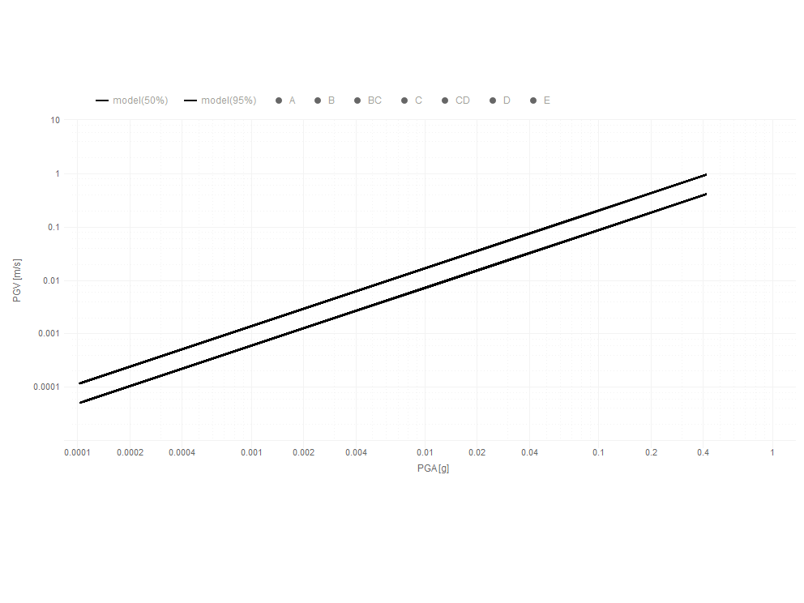

ID | UN | b0 | b1 | b2 | sdLnI | R2 |
|---|---|---|---|---|---|---|
PGV | m/s | 1.058 | 1.084 | 0.0000 | 0.511 | 0.947 |
PGD | m | 0.258 | 1.183 | 0.0000 | 1.041 | 0.837 |
ARMS | m/s2 | 0.175 | 1.016 | 0.0000 | 0.310 | 0.977 |
VRMS | m/s | 0.234 | 1.115 | 0.0000 | 0.691 | 0.912 |
IA | m/s | 12.654 | 1.954 | 0.0000 | 0.688 | 0.970 |
CAV5 | m/s | 0.223 | 0.568 | -0.0304 | 0.792 | 0.889 |
2 Metodología
2.1 Modelo probabilístico
Las aceleraciones máximas del terreno \(a_*\) de diferentes registros sísmicos pueden entenderse como realizaciones de una variable aleatoria \(A\) tal que \(\{a_1,a_2...,a_n \}\in A\) con una cierta probabilidad anual de excedencia AEP conocida \(P[A>a^*]=\lambda\) . Por otra parte, asumimos que existen otras medidas de intensidad \(i_*\) que también son realizaciones de una variable aleatoria \(I\) tal que \(\{i_1,i_2...,i_n \}\in I\) y que tienen una cierta correlación con las aceleraciones y las AEP.
La estimación más simple de la relación entre una medida de intensidad arbitraria \(Y=ln(I)\) y las aceleraciones \(X=ln(A)\) puede obtenerse a partir de la la media condicional \(Y\approx E[Y|X]\) y un error aleatorio \(\varepsilon\) con esperanza nula \(E[\varepsilon]=0\) y varianza constante. Si asumimos que las diferentes realizaciones de intensidades \(Y=ln(I)\) son variables aleatorias independientes, el error aleatoriotendrá además una distribución normal con parámetros \(\varepsilon \sim \mathcal{N}(0,\sigma_{LnI}^2)\). A partir de esta definición, los estimadores de medidas de intensidad pueden explicarse razonablemente mediante la expresión 2.1
\[I|a_*\approx \eta_I(a_*) \ \varepsilon_I \approx b_0 \ (a_*)^{b_1}\ e^{b_2 / a_*} \ \varepsilon_I \tag{2.1}\]
donde \(b_0\), \(b_1\) y \(b_2\) son los estimadores a determinar mediante regresión lineal y \(a_*\) es la aceleración \(pga\) del terreno y \(\varepsilon_i\) es una variable aleatoria con esperanza unitaria \(E[\varepsilon_I]=1\) y una varianza \(var[\varepsilon_I]\approx \sigma_{LnI}^2\).
Si conocemos la probabilidad anual de excedencia AEP \(P[X>x^*]=\lambda = 1/ \tau\) , las aceleraciones máximas en suelo duro pueden estimarse del mismo modo a partir de una mediana condicional \(E[A|T=\tau]\approx\eta_A(\tau)\) y un error aleatorio la forma 2.2, en donde \(A\) es una variables aleatoria que representa las aceleraciones en suelo duro y \(\varepsilon\) es una variable aleatoria con esperanza unitaria \(E[\varepsilon_A]=1\) y varianza constante \(var[\varepsilon_A]\approx \sigma_{LnA}^2\)
\[A|\tau_* \approx\eta_A(\tau_*) \ \varepsilon_A \approx d_0 \ \tau_*^{d_1}\ e^{d_2 \ \tau_*} \ \varepsilon_A \tag{2.2}\]
Reemplazando la variable aleatoria 2.1 en 2.2, las medidas de intensidad pueden expresarse en términos de la probabilidad anual del AEP \(\lambda=1/\tau\) según el modelo de la expresión 2.3 en donde \(\tau_*\) es el período de retorno objetivo, \(d_0,d_1,d_2\) son estimadores a determinar,y \(\varepsilon_{I|A}\) es una variable aleatoria con esperanza unitaria \(E[\varepsilon_{I|A}]=1\) y una varianza \(var[\varepsilon_{I|A}]\approx \sigma_{LnA}^2+\sigma_{LnI}^2\)
\[I|\tau_* \approx \eta_{I|A}(\tau_*) \ \varepsilon_{I|A} \approx b_0\ \eta_A(\tau_*)^{b_1}\ e^{b_2 / \eta_A(\tau_*)} \ \varepsilon_{I|A} \tag{2.3}\]
Los cuantiles \(q\) de la variable aleatoria \(\varepsilon\) permiten estimar la probabilidad de excedencia \(P[Y>y_*]\leq p\), según \(q={\Phi^{-1}(p,\sigma_{I|A})}\), donde \(p\) es la probabilidad de excedencia objetivo, \(\sigma_{I|A}^2\approx\sigma_{LnI}^2+\sigma_{LnA}^2\) y \(\Phi\) es la función estandar de densidad acumulada (CDF) . Según esta definición, las intensidades máximas de diseño para un nivel de confiabilidad \(1-p\) se determinan según:
\[i_{max}(p,\tau) \approx \eta_{I|A}(\tau) \ \beta_p \approx b_0\ \left( d_0\ \tau^{d_1}\ e^{d_2 \ \tau} \right)^{b_1}\ e^{b_2 / \left( d_0\ \tau^{d_1}\ e^{d_2 \ \tau} \right)} \ \beta_p \tag{2.4}\]
donde \(\beta_p=e^q\) es el factor de confiabilidad \((\beta_{50 \%}=1)\) y \(1-p\) es la confiabilidad objetivo (ej. 95%). La expresión 2.4 permite estimar cualquier medidas de intensidad en términos de un AEP objetivo \(\lambda_*=1/\tau_*\) y una probabilidad de excedencia \(p\) dada. En el capítulo siguiente se presentan algunos ejemplos de aplicación de la presente metodología
2.2 Estimación de parámetros
Los estimadores de los parámetros \(b_0\), \(b_1\) y \(b_2\) fueron obtenidos en base a modelos de regresión paramétricos entrenados con el 95 % de las muestras del conjunto de registros sísmicos de aceleraciones en suelo duro. Las figuras siguientes presentan las correlaciones con la aceleración horizontal \(pga\) de diferentes medidas de intensidad obtenidas para una muestra de 10,000 registros sísmicos. La última solapa presenta los estimadores de los parámetros y los coeficientes de regresión de cada modelo.
